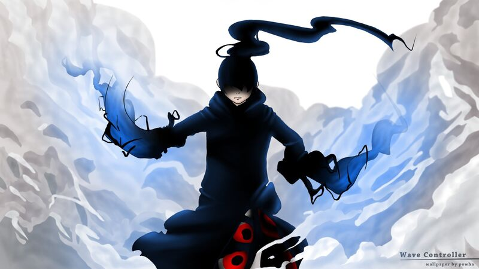

Depuis que ma soeur et ma cousine m'ont montré des animés et des mangas, je suis passioné par ceux-ci ainsi que depuis plus recemment par les Webtoons, qui sont la versions coréennes des mangas. Je passe donc la plus part de mon temps à lire toute sorte de mangas et webtoons de plusieurs style differents : action, humour, drama, ect....

Une fois le manga, ou le webtoon, sorti en anime, je le regarde car il existe des differences entres les versions manga et anime dans pas mal de manga adapté en animé, cela permet de raconter deux histoires differentes dans le même univers.
Judo/Sport
Je suis aussi passioné par le sport, principalement le judo, le sport que je pratique depuis mes 4 ans. Cela ne m'empeche cependant pas de regarder d'autres sports comme le rugby où je supporte l'équipe du stade français Paris, je regarde de tous les sports, handball, football, volley, ski et même de la pétanque. Je suis moi-même un sportif, je m'entraine enormément durant la semaine, enfin moins depuis le confinement, et je suis un competiteur, je suis vice-champion de Paris 2019, malheureusement je n'ai pas pu faire de competitions en 2020 pour cause de pandemie mais j'ai hâte de retourner sur le tatami.
les differents sports et equipes que je regarde
Sport
Ligue
Equipe
Rugby
Top 14
Stade Français
Overwatch
Overwatch league
Paris Eternal
Judo
Mondial
Clarisse Agbegnenou
Jeux video
Un dernier loisir que je pratique pas mal est de joueur aux jeux vidéos. Mes types de jeux vidéos favori est les jeux de stratégie, comme Civilisation ou les Total War, ainsi que les jeux de gestions comme The Guild. Ces types de jeux m'interresse car on n'est pas tous le temps dans l'action mais il faut en permanence réfléchir sur les actions que l'on va mener.
Un autre de mes coups de coeur sont les jeux de mensonges et trahisons, comme among us, c'est un jeu qui necessite de prevoir les actions des autres, c'est ce qui le rend si attractif pour moi.
Musique
C'est après avoir vu l'anime initial d qu j'ai compris quel était le style de musique que j'apprecias le plus, l'eurobeat. C'est le style parfait pour enchainer le travail sans s'ennuyer et sans se lasser avec une musique très entrainante.